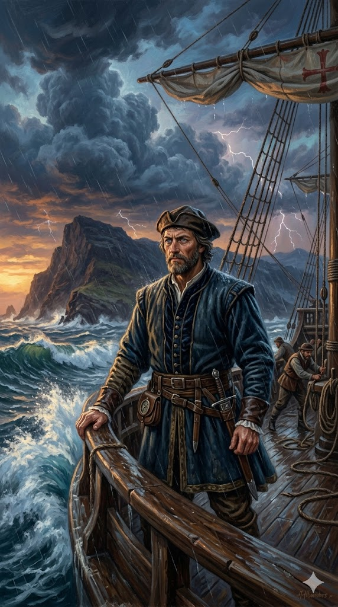

ברתולומיאו דיאש

לחץ על התמונה להגדלה
מקור ומשמעות השם המלא (אטימולוגיה)
שם פרטי: ברתולומיאו (Bartolomeu)
השם "ברתולומיאו" בפורטוגזית הוא גלגול של השם היווני "Bartholomaios" (Βαρθολομαῖος), שמקורו בשפה הארמית-עברית של המזרח התיכון העתיק: "בר-תלמי" או "בר-תלמיא".
פירוש: הקידומת "בר" פירושה "בן". המילה "תלמי" יכולה להיות קשורה לתלם (חריש באדמה, כלומר בן של חקלאי) או להעיד על שייכות לשושלת תלמי.
ההקשר התרבותי-נוצרי: השם היה נפוץ מאוד באירופה הנוצרית לכבוד ברתולומאוס הקדוש, אחד משנים עשר השליחים של ישו. הענקת שם של שליח נוצרי העידה על מסורת קתולית אדוקה במשפחה.
שם משפחה: דיאש (Dias)
"דיאש" הוא אחד משמות המשפחה העתיקים והנפוצים ביותר בפורטוגל (מקביל ל"דיאס" בספרדית).
פירוש ובלשנות: זהו שם פטרונימי (שם המבוסס על שם האב). פירושו במקור הוא "בנו של דיוגו" (Diogo) או "בנו של דיאגו", שמות פורטוגזיים/ספרדיים המקבילים לשם העברי יעקב (דרך הגרסה הלטינית Iacobus). ייתכן גם קשר אטימולוגי עתיק יותר למילה הלטינית "Dies" (ימים).
ילדות ורקע מוקדם
מעט מאוד תיעוד נשאר על שנות ילדותו המוקדמות של ברתולומיאו דיאש. הוא נולד בסביבות שנת 1450 בפורטוגל, ככל הנראה באזור אלגארבה (Algarve) או בליסבון, למשפחה בעלת היסטוריה ימית ענפה. היסטוריונים סבורים שהוא היה צאצא של דיניש דיאש, חוקר פורטוגלי נודע שגילה את קייפ ורדה (כף ורדה) בשנת 1444, וככל הנראה הים והספינות זרמו בדמו מלידה.
דיאש גדל בחצר המלוכה של ליסבון וקיבל חינוך מתקדם ביותר באסטרונומיה, מתמטיקה וניווט – תחומים שפורטוגל הובילה בהם את העולם באותה תקופה בזכות המורשת של "הנרי הספן". לפני שמונה למפקד המשלחת ההיסטורית שלו, הוא כבר צבר ניסיון ימי עצום כששירת בארסנל הצי המלכותי הפורטוגלי, פיקח על מחסני הכתר בנמל גינאה שבאפריקה, ואף פיקד על ספינת מלחמה (קרוולה) בשם "סאו קריסטובאו".
אידאולוגיה, מניעים ותפיסת עולם
מסעו של דיאש היה מבצע מדיני צבאי-מדעי מתוכנן היטב במימון הכתר הפורטוגלי. המניעים שלו לא היו רק אישיים, אלא ביצוע מדויק של חזון לאומי תחת פיקודו של המלך ז'ואאו השני ("הנסיך המושלם").
המניע הכלכלי (עקיפת המונפול): פורטוגל שאפה לשבור את המונופול הוונציאני-מוסלמי על סחר התבלינים מהודו ואסיה (שהתנהל דרך היבשה והים התיכון). המטרה המוצהרת של דיאש הייתה אחת: למצוא את הקצה הדרומי של יבשת אפריקה ולהוכיח שניתן להקיף אותה בים כדי להגיע ישירות להודו.
המניע הפוליטי-דתי (החיפוש אחר פרסטר ג'ון): מניע חזק לא פחות היה המיתוס על "פרסטר ג'ון" (Prester John) – מלך נוצרי אגדי, אדיר ועשיר, שעל פי השמועות שלט בממלכה עצומה אי שם במזרח או באפריקה (ככל הנראה הדיווחים התבססו בחלקם על האימפריה הנוצרית של אתיופיה). המלך ז'ואאו השני הורה לדיאש לחפש את הממלכה הזו, מתוך חזון ליצור ברית נוצרית צבאית אדירה (אירופית-אפריקאית) שתכפר על נפילת קונסטנטינופול ותכה את האימפריה המוסלמית משתי חזיתות.
נסיבות היסטוריות למסע (פרויקט המאה הפורטוגלי)
המסע של דיאש ב-1487 לא צמח בחלל הריק; הוא היה שיאה של עבודת נמלים פורטוגלית שנמשכה כשבעים שנה. החל מתקופתו של הנרי הספן בתחילת המאה ה-15, הצי הפורטוגלי שלח קרוולות לזחול דרומה לאורך חופי מערב אפריקה, מסע אחר מסע. הם מיפו את החופים, למדו את משטרי הרוחות, והקימו תחנות סחר (פייטוריות).
עד למסעו של דיאש, האירופאים (בהתבסס על הגיאוגרף היווני העתיק תלמי) האמינו ברובם שהאוקיינוס ההודי הוא "ים סגור", מוקף ביבשה מדרום, ושאי אפשר כלל להקיף את אפריקה. דיאש יצא לדרך כשהציפייה בפורטוגל הייתה בשיאה – הקפטן הקודם, דיוגו קאו, הגיע ב-1484 עד לחופי נמיביה של ימינו, אך מת או נאלץ לחזור. על דיאש הוטלה המשימה לסיים סוף סוף את פרויקט הדורות ולהוכיח שהאוקיינוסים מחוברים.
המסע לפריצת הדרך (1487-1488)
באוגוסט 1487 הפליג דיאש מליסבון עם צי קטן וזריז של שלוש ספינות בלבד: שתי קרוולות חמושות (אחת בפיקודו והשנייה בפיקודו של ז'ואאו אינפנטה) וספינת אספקה (תחת פיקודו של אחיו, פרו דיאש). ספינת האספקה הייתה חידוש קריטי שאפשר להם להפליג רחוק יותר מבלי לעצור להצטייד בחוף עוין.
בתגלית מבריקה של ניווט, הוא הבין שאם הם שטו מזרחה מספיק זמן ולא פגעו בחוף, סימן שהם עברו את קצה היבשת. הוא הורה לשוט צפונה, וב-3 בפברואר 1488 נחתו בחופי מפרץ מוסל (Mossel Bay) שבדרום אפריקה. הם הבינו שהמים סביבם הם כבר האוקיינוס ההודי.
המרד והחזרה ("כף הסערות"): דיאש רצה להמשיך צפונה להודו, אך הצוות המותש והמפוחד, שסבל ממחלות ואספקתו אזלה (ספינת האספקה הושארה מאחור לפני הסערה), איים במרד גלוי. דיאש נאלץ להסכים לחזור. בדרכם חזרה צפונה, הם ראו לראשונה את ה"כף" שאותו עקפו מבלי לדעת בסערה. דיאש כינה אותו "כף הסערות" (Cabo das Tormentas). כשהגיע לליסבון בסוף 1488 ודיווח למלך, החליט המלך ז'ואאו השני לשנות את השם המפחיד לשם אופטימי וקרא לו "כף התקווה הטובה" (Cabo da Boa Esperança) – התקווה להגשמת החלום להגיע להודו.
הגילוי וחשיבותו ההיסטורית
מהות הגילוי: הגילוי של דיאש לא היה גילוי של יבשת לא-נודעת, אלא פתרון של אחת החידות הגיאוגרפיות והמדעיות הגדולות בהיסטוריה. הוא ניפץ לרסיסים את התפיסה של תלמי (ששלטה באקדמיה למעלה מאלף שנים) שהאוקיינוס ההודי הוא ימה סגורה. הוא הוכיח באופן סופי ומוחלט שהאוקיינוס האטלנטי והאוקיינוס ההודי מחוברים זה לזה.
דיאש עצמו מעולם לא קיבל את התהילה הראויה לו כמפקד על מסע להודו. בשנת 1500, הוא צורף כקפטן בארמדה העצומה של פדרו קבראל (שגילתה את ברזיל בדרכה להודו). במהלך הפלגתם חזרה במזרח האוקיינוס האטלנטי, ציפור האירוניה ההיסטורית הכתה בו: סערה נוראית החריבה ארבע מאוניות הצי – אחת מהן הייתה זו של דיאש. הוא טבע למוות באותו אזור של הים שהוא עצמו גילה וכינה "כף הסערות".
מקורות וביבליוגרפיה (אימות מחקר)
- "דקאדות של אסיה" (Décadas da Ásia): החיבור ההיסטורי המונומנטלי של ז'ואאו דה בארוס (João de Barros) בן המאה ה-16, המהווה את המקור הכתוב המרכזי למסעות הפורטוגליים ולסיפורו של דיאש בפרט.
- Esmeraldo de Situ Orbis: כתב יד של חוקר וקרטוגרף פורטוגלי בן התקופה, דוארטה פאצ'קו פריירה (Duarte Pacheco Pereira), הכולל מידע גיאוגרפי ממקור ראשון על תגליות החוף האפריקאי.
- מחקר היסטורי מודרני: Russell-Wood, Peter E. (1998). The Portuguese Empire, 1415–1808: A World on the Move. (מחקר המנתח לעומק את המדיניות הכלכלית וההישגים הניווטיים של הכתר הפורטוגלי).